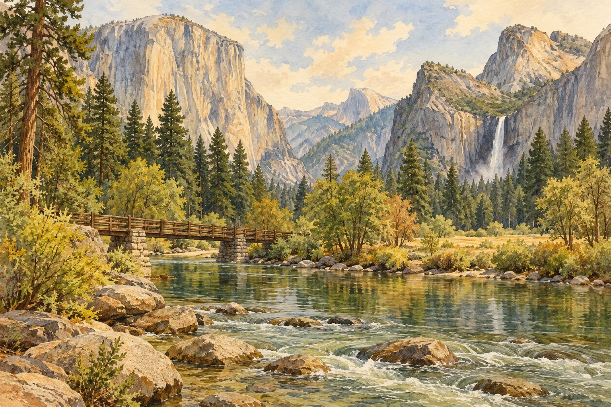

CALIFORNIA
Yosemite
优胜美地National Park
花岗岩与水声之间。Granite, water and the space between.
路线资料 · NPS 参考Route notes · NPS reference
Vernal Fall Footbridge
- 往返Round trip
- 2.6 km1.6 mi
- 海拔变化Elevation change
- 400 ft
- 参考用时Est. time
- 1–1.5 h
从 Happy Isles 一带走向 Vernal Fall 步桥，沿途看 Merced River 与瀑布景色。这里列的是步桥往返参考，不是登顶瀑布的全程。A reference walk from the Happy Isles area to Vernal Fall Footbridge, beside the Merced River. These figures describe the footbridge return trip, not the climb to the top of the falls.
步桥以上的 Mist Trail 可能受施工或冬季关闭影响，需查看官方实时路况。Above the footbridge, Mist Trail access can change with construction and winter closures. Check current park conditions.
NPS 官方路线资料NPS trail information ↗